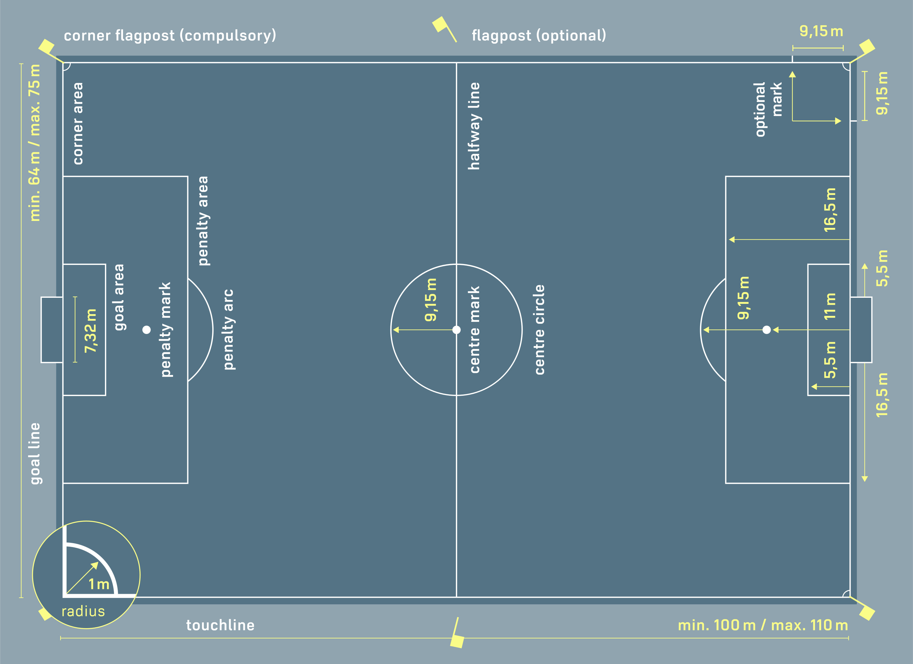
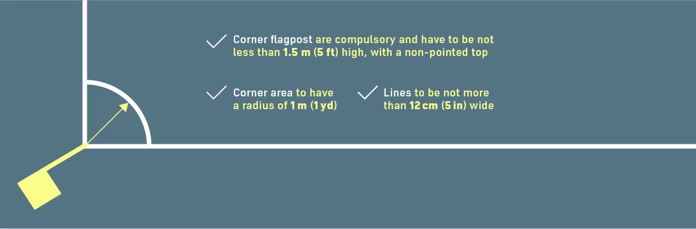
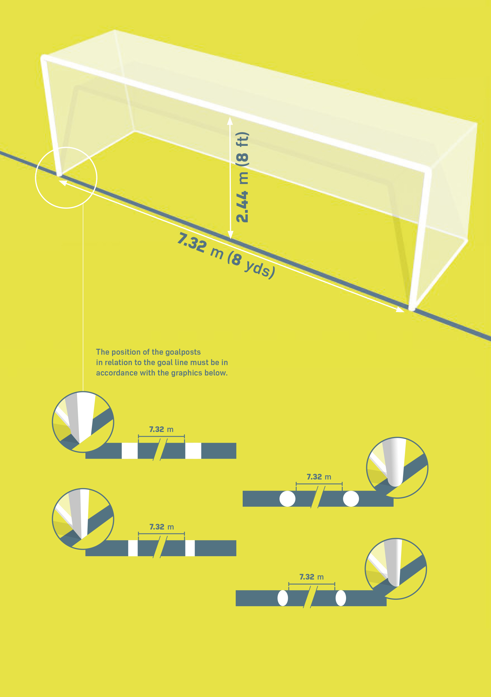
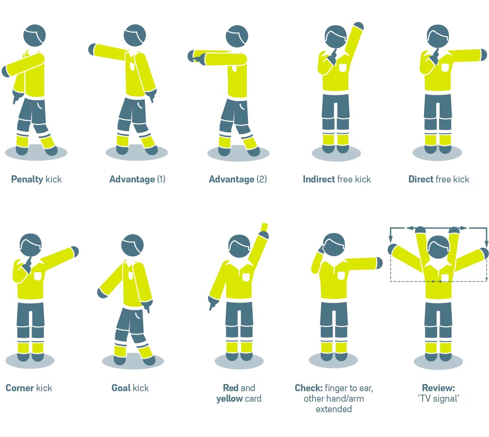
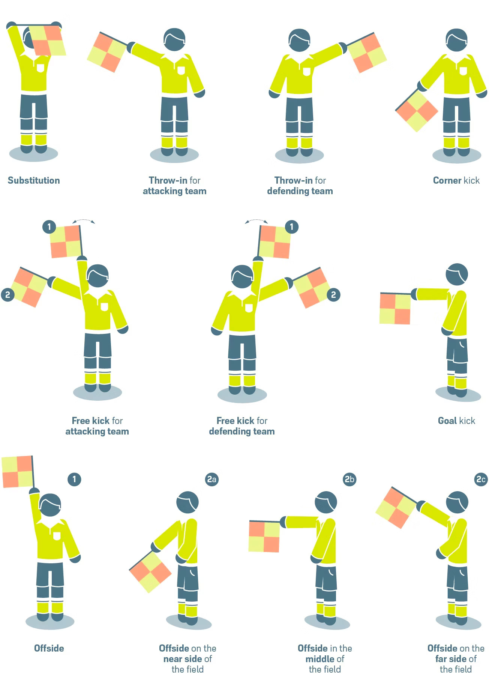
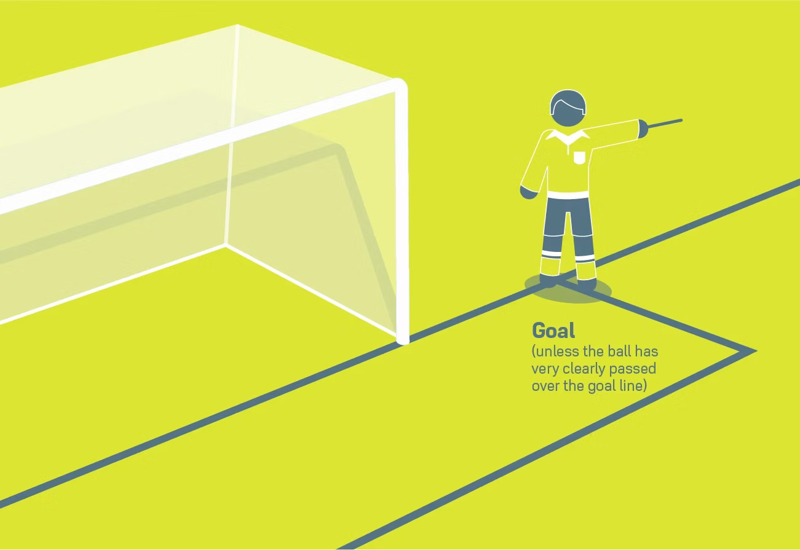
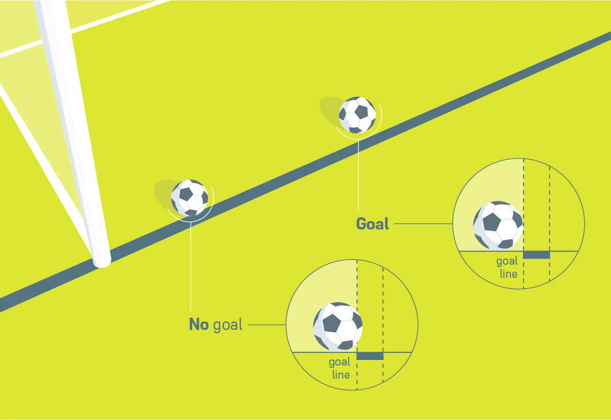
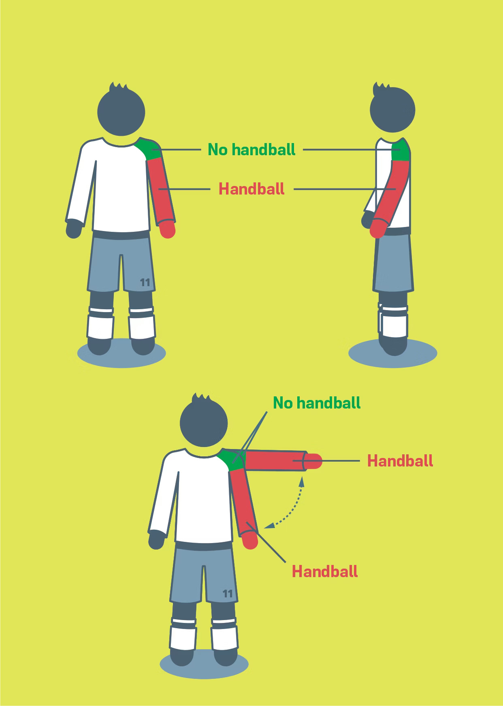
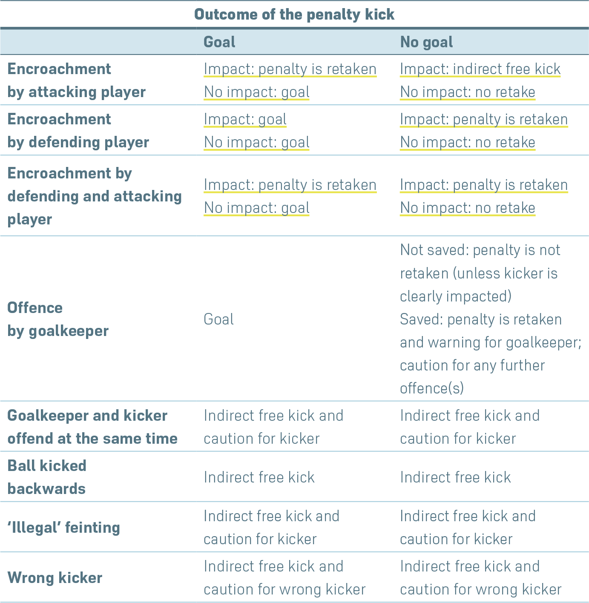

The field of play must be a wholly natural or, if competition rules permit, a wholly artificial playing surface except where competition rules allow a hybrid system (integrated combination of artificial and natural materials). The colour of artificial surfaces must be green.
For international matches or competitions involving FIFA-affiliated national teams or clubs, artificial surfaces must meet the requirements of the FIFA Quality Programme for Football Turf, unless The IFAB grants special dispensation.
1.2 Field Markings
The field must be rectangular and marked with continuous lines, which must not be dangerous. Artificial surface material may be used for markings on natural fields if it is not hazardous. These lines belong to the areas they define.
Only lines described in Law 1 may appear on the field. On artificial fields, other lines are allowed if they are a different colour and clearly distinguishable from football markings.
The two longer boundary lines are touchlines; the two shorter are goal lines. The halfway line divides the field into two halves and includes the centre mark, which has a 9.15 m (10 yds) radius circle around it. Marks 9.15 m from the corner arc may also be added off the field.
All lines must be the same width (max. 12 cm or 5 ins). Goal lines must be as wide as the goalposts and crossbar. Measurements are taken from the outside of lines.
Unauthorised field markings by players will result in a caution for unsporting behaviour.
1.3 Dimensions
Touchline: 90–120 m (100–130 yds)
Goal line: 45–90 m (50–100 yds)
Competitions may fix dimensions within these limits.
Semi Automated Offside System
1.4 Dimensions for International Matches
Touchline: 100–110 m (110–120 yds)
Goal line: 64–75 m (70–80 yds)
Competitions may determine dimensions within these limits.

Semi Automated Offside System
1.5 The Goal Area
Two lines are drawn at right angles to the goal line, 5.5 m (6 yds) from the inside of each goalpost. They extend 5.5 m (6 yds) into the field and are joined by a line parallel to the goal line.
1.6 The Penalty Area
Two lines are drawn 16.5 m (18 yds) from each goalpost at right angles to the goal line, extending 16.5 m into the field, joined by a line parallel to the goal line.
Within the penalty area: the penalty mark is 11 m (12 yds) from the midpoint between the posts. A 9.15 m (10 yds) arc is drawn outside the penalty area from this mark.
1.7 The Corner Area
Defined by a quarter-circle with a 1 m (1 yd) radius from each corner flagpost inside the field.

Semi Automated Offside System
1.8 Flagposts
A flagpost at least 1.5 m (5 ft) high with a non-pointed top and flag is required at each corner. Additional flagposts may be placed at halfway line ends, at least 1 m (1 yd) outside the touchline.
1.9 The Technical Area
Only used in stadiums with designated seating for team officials and substitutes. The area extends 1 m (1 yd) beyond each end of the seated area and 1 m from the touchline. Markings should define the space.
Occupants must be identified, behave responsibly, and stay within the area except in specific cases (e.g., medical assessment). Only one person may give tactical instructions at a time.
1.10 Goals
Placed at the centre of each goal line, goals consist of two vertical posts joined by a crossbar. They must be the same shape (square, round, elliptical, etc.), white, and made of safe materials. Internal post distance is 7.32 m (8 yds); crossbar height is 2.44 m (8 ft).
Goalposts and crossbars must not exceed 12 cm (5 ins) in width or depth. If broken, play is stopped until repair. Flexible or unsafe materials are not permitted.
Goals must be anchored securely. Nets may be used if they do not interfere with play.

Semi Automated Offside System
1.11 Goal Line Technology (GLT)
GLT may be used to determine if a goal was scored. It must be stated in competition rules and comply with the FIFA Quality Programme.
Only referees receive the signal (within one second) via watch or earpiece. Referees must test GLT before matches. If the system fails, it must not be used and authorities must be notified.
1.12 Commercial Advertising
Advertising is prohibited on the field, inside goal net areas, technical areas, or within 1 m (1 yd) of boundary lines during the match period. No equipment may be attached to goals, nets, or flags.
Upright ads must be at least 1 m from touchlines, goal lines (net depth), and the goal net.
1.13 Logos and Emblems
Logos or emblems (real or virtual) of FIFA, associations, competitions, or clubs are not allowed on the field, nets, goals, or flagposts during play. Flags may contain logos.
1.14 Video Assistant Referees (VARs)
VAR matches require a Video Operation Room (VOR) and at least one Referee Review Area (RRA).
The VOR houses VAR, AVAR, and RO, located in or near the stadium or remotely. Only authorised personnel may enter or communicate with officials there. Unauthorized entry results in a sending-off.
The RRA is a visible, marked area outside the field where referees conduct on-field reviews. Unauthorized entry by players or staff results in a caution.
Law 2: The Ball
2.1 Qualities and measurements
All balls must be:
spherical
made of suitable material
of a circumference of between 68 cm (27 ins) and 70 cm (28 ins)
between 410 g (14 oz) and 450 g (16 oz) in weight at the start of the match
of a pressure equal to 0.6–1.1 atmosphere (600–1,100 g/cm²) at sea level (8.5–15.6 lbs/sq in)
All balls used in matches played in an official competition organised under the auspices of FIFA or confederations must meet the requirements and bear one of the marks of the FIFA Quality Programme for Footballs.
Each mark indicates that the ball has been officially tested and meets the specific technical requirements for that mark, which are additional to the minimum specifications stipulated in Law 2 and must be approved by The IFAB.
National FA competitions may require the use of balls bearing one of these marks.
In matches played in an official competition organised under the auspices of FIFA, confederations or national FAs, no form of commercial advertising is permitted on the ball, except for the logo/emblem of the competition, the competition organiser and the authorised manufacturer’s trademark. The competition regulations may restrict the size and number of such markings.
2.2 Replacement of a defective ball
If the ball becomes defective:
play is stopped and
restarted with a dropped ball
If the ball becomes defective at a kick-off, goal kick, corner kick, free kick, penalty kick or throw-in, the restart is retaken.
If the ball becomes defective during a penalty kick or penalties (penalty shoot-out) as it moves forward and before it touches a player, crossbar or goalposts, the penalty kick is retaken.
The ball may not be changed during the match without the referee’s permission.
2.3 Additional balls
Additional balls which meet the requirements of Law 2 may be placed around the field of play and their use is under the referee’s control.
Law 3: The Players
3.1 Number of players
A match is played by two teams, each with a maximum of eleven players; one must be the goalkeeper. A match may not start or continue if either team has fewer than seven players.
If a team has fewer than seven players because one or more players has deliberately left the field, the referee may allow play to continue but must not restart play after the ball goes out of play.
If the competition rules require all players and substitutes to be named before kick-off, only those listed may take part in the match upon arrival.
3.2 Number of substitutions
Official competitions:
Maximum of five substitutes may be used, as determined by the governing body.
Each team has a maximum of three substitution opportunities (excluding half-time).
Substitutions during the same stoppage by both teams count as one opportunity each.
Extra time:
Unused substitutes and substitution opportunities may be used.
One additional substitution and opportunity may be allowed.
Substitutions between full-time and extra time, and at half-time in extra time, do not count as opportunities used.
Other matches:
Senior ‘A’ internationals: Up to 15 substitutes may be named; six may be used.
Other matches: Number must be agreed upon before the match and communicated to the referee. If not, each team may use six.
Return substitutions: Allowed only in youth, veterans, disability, and grassroots football with governing approval. Concussion substitutions: Additional permanent substitutions may be used under protocol.
3.3 Substitution procedure
Substitutes must be named before the match; otherwise, they may not play.
To substitute:
Referee must be informed.
Player must receive permission and leave the field by the nearest boundary line unless otherwise directed.
Substitute enters during a stoppage, at halfway line, after the player exits, and with referee's signal.
Substitution is complete once the substitute enters; the replaced player cannot return (unless return subs allowed).
All substitutes and substituted players remain under referee authority.
3.4 Changing the goalkeeper
Any player may change places with the goalkeeper if:
The referee is informed beforehand.
The change occurs during a stoppage in play.
3.5 Offences and sanctions
If a named substitute starts instead of a named player and the referee was not informed:
The substitute continues playing.
No disciplinary action is taken.
The replaced player becomes a named substitute.
Substitution count is not affected.
Unauthorized goalkeeper change: Referee allows play to continue and cautions both players when play stops (unless at half-time or between periods). Other substitution offences: Players are cautioned, play restarts with an indirect free kick from where the ball was.
3.6 Players and substitutes sent off
Sent off before team list: cannot be named.
Sent off after naming but before kick-off: can be replaced, but replacement cannot be replaced.
Sent off after kick-off: cannot be replaced.
Sent off substitutes: may not be replaced.
3.7 Extra persons on the field of play
Only players, substitutes, and team officials named on the list are authorized. Others are outside agents.
If such a person enters the field:
Referee stops play only if interference occurs.
Person is removed at next stoppage.
Disciplinary action is taken.
Restart:
If interference by team personnel: direct free kick or penalty.
If interference by outside agent: dropped ball.
If the ball goes into the goal, the goal is allowed unless interference was by the attacking team.
3.8 Player outside the field of play
If a player re-enters without permission:
Play is stopped only if interference occurs or advantage cannot be applied.
Player is cautioned.
Restart:
Direct free kick from the point of interference.
Indirect free kick from ball position if no interference.
Leaving as part of play is not an offence.
3.9 Goal scored with an extra person on the field of play
If a goal is scored and the referee realizes before restart that an extra person interfered:
Goal disallowed if the person was from the scoring team or an interfering outside agent.
Goal allowed if the person was from the defending team or a non-interfering outside agent.
The extra person must be removed.
If discovered after restart, goal stands, play is stopped, and restarted appropriately.
3.10 Team captain
Each team must have a captain wearing an armband. The captain has no special status but is responsible for team conduct.
Law 4: The Players’ Equipment
4.1 Safety
A player must not use equipment or wear anything that is dangerous. All items of jewellery (necklaces, rings, bracelets, earrings, leather bands, rubber bands, etc.) are forbidden and must be removed. Using tape to cover jewellery is not permitted.
Players must be inspected before the match and substitutes before entering. If a player wears unauthorized/dangerous equipment or jewellery, the referee must order the player to:
remove the item
leave the field at the next stoppage if they don’t comply
A player who refuses or wears it again must be cautioned.
4.2 Compulsory Equipment
The following items are required:
Shirt with sleeves
Shorts
Socks – tape must match sock color
Shinguards – appropriate size, suitable material, must be covered by socks
Footwear
The team captain must wear an armband issued/authorized by the organizer. Lost footwear or shinguards must be replaced ASAP and no later than the next stoppage. Goals scored without them still count.
4.3 Colours
Teams must wear colors that distinguish them from each other and officials
Goalkeepers must be distinguishable from all others
If both goalkeepers wear the same and no alternative is available, the match proceeds
Undershirts must match the main shirt sleeve color or exact pattern. Undershorts/tights must match the shorts’ main color — all players on the same team must match.
4.4 Other Equipment
Non-dangerous protective items (e.g. soft headgear, facemasks, padded gear, sports glasses) are allowed. Goalkeepers may wear caps and tracksuit bottoms.
Head Covers: Must be:
Black or same main shirt color (and same for all teammates)
Professional-looking
Not attached to the shirt
Safe for all players (no closing mechanisms around neck)
Free of protruding elements
Electronic Communication
Players (including substitutes/sent-off players) cannot use electronic devices unless EPTS is allowed. Team officials may use handheld devices for tactical/safety purposes. Misuse leads to dismissal.
Electronic Performance & Tracking Systems (EPTS)
If used, wearable EPTS must meet FIFA Quality Programme standards and be non-dangerous. Organizers must ensure accurate and reliable data when provided. FIFA supports approval of reliable systems.
4.5 Slogans, Statements, Images & Advertising
Equipment must not show political, religious, or personal slogans/statements/images. Undergarments may not display these either. Violations may lead to sanctions.
Allowed:
Player name/number
Team crest/logo
Event info (teams, date, venue)
Campaign slogans (e.g., respect, integrity)
Permitted advertising per rules
Placement is limited to shirt front or captain’s armband. Sensitive content should consider opponent and public perception.
Not Allowed:
Any person (unless part of official event name)
Political organizations or governments
Discriminatory or offensive groups/actions
Specific political acts/events
Further limitations may be set by competition organizers. Disputes should be resolved before the match.
4.6 Offences and Sanctions
Play need not stop for violations. Player is instructed to:
Leave the field to correct the equipment
Stay off until it’s corrected and checked by an official
Re-entry must be authorized by the referee (even during play). Unauthorized re-entry results in a caution. If play is stopped to caution the player, an indirect free kick is awarded unless there was interference — then a direct free kick (or penalty) is given.
Law 5: The Referee
5.1 The authority of the referee
Each match is controlled by a referee who has full authority to enforce the Laws of the Game in connection with the match.
5.2 Decisions of the referee
Decisions will be made to the best of the referee’s ability according to the Laws of the Game and the ‘spirit of the game’ and based on the referee’s opinion, who has discretion to take appropriate action within the Laws.
The referee’s decisions regarding facts connected with play (including goals and match results) are final and must always be respected.
The referee may not change a restart decision once play has restarted or the half ended and the referee left the field, except if the referee goes to the review area or instructs players to return before leaving.
Disciplinary sanctions after play restarts are only possible if another official identified the offence and tried to communicate it before play restarted.
If the referee is incapacitated, play may continue under other officials until the ball is out of play.
5.3 Powers and duties
The referee:
Enforces the Laws of the Game
Controls the match with other officials
Acts as timekeeper, keeps match records, and reports incidents
Supervises and indicates restarts
Allows advantage when appropriate and penalises if advantage does not materialize
Disciplinary action for cautionable/sending-off offences
Authority to show yellow/red cards and temporary dismissals throughout the match
Acts on advice from other match officials
Manages injuries, stopping play if serious and ensuring player removal for treatment, with exceptions for goalkeepers, collisions, severe injuries, or penalty kick takers
Ensures bleeding players leave the field and may only re-enter on referee’s signal
Stops, suspends or abandons match due to outside interference (e.g., inadequate floodlights, objects thrown, unauthorized persons)
5.4 Video assistant referee (VAR)
VAR is permitted only with FIFA approval and in cases of clear and obvious errors or serious missed incidents concerning:
Goal/no goal
Penalty/no penalty
Direct red card (not second caution)
Mistaken identity for cautions or send-offs
The referee makes final decisions, possibly after reviewing footage (‘on-field review’).
After play restarts, reviews are limited to mistaken identity or sending-off offences.
5.5 Referee's equipment
Compulsory equipment:
Whistle(s)
Watch(es)
Red and yellow cards
Notebook or record-keeping method
Other permitted equipment:
Communication devices (buzzer, headsets)
Fitness monitoring devices (EPTS)
Referees must not wear jewellery or electronic devices (including cameras).
5.6 Referee signals
Refer to official graphics for approved referee signals.

Semi Automated Offside System
5.7 Liability of match officials
Referees and match officials are not liable for:
Injuries to players, officials, or spectators
Damage to property
Losses due to decisions made under the Laws of the Game
This includes decisions on field conditions, match abandonment, equipment suitability, spectator interference, player treatment, clothing/equipment, authorized persons near the field, and other match-related decisions.
Law 6: The Other Match Officials
Introduction
Other match officials (two assistant referees, a fourth official, two additional assistant referees, a reserve assistant referee, a video assistant referee (VAR) and at least one assistant VAR (AVAR)) may be appointed to matches. They assist the referee in controlling the match in accordance with the Laws of the Game but the final decision always remains with the referee.
The referee, assistant referees, fourth official, additional assistant referees and reserve assistant referee are the ‘on-field’ match officials.
The VAR and AVAR are the ‘video’ match officials (VMOs) and assist the referee in accordance with the Laws and the VAR protocol.
Match officials operate under the referee’s direction. In case of undue interference or improper conduct, the referee may relieve them of duties and report to appropriate authorities.
The ‘on-field’ officials assist the referee with offences when they have a clearer view and must report serious misconduct or incidents out of view of the referee and other officials, advising the referee of any reports made.
They also assist with inspection of the field, balls, players’ equipment, and maintain records of time, goals, misconduct, etc.
Competition rules must specify who replaces a match official unable to start or continue, particularly who takes over if the referee cannot continue (fourth official, senior assistant referee, or senior additional assistant referee).
6.1 Assistant referees
Assistant referees indicate:
When the whole ball leaves the field and which team is entitled to corner kick, goal kick, or throw-in
When a player in offside position may be penalised
When a substitution is requested
At penalty kicks, if the goalkeeper moves off the goal line before the ball is kicked and if the ball crosses the line (if additional assistant referees are appointed, the assistant referee takes position in line with the penalty mark)
They also monitor the substitution procedure.
Assistant referees may enter the field to help control the required 9.15 m (10 yards) distance.
6.2 Fourth official
The fourth official assists by:
Supervising the substitution procedure
Checking a player’s/substitute’s equipment
Managing re-entry of players following referee’s signal
Supervising replacement balls
Indicating minimum additional time at end of each half (including extra time)
Informing the referee of irresponsible behaviour by technical area occupants
6.3 Additional assistant referees
Additional assistant referees may indicate:
When the whole ball passes over the goal line, including goals
Which team is entitled to corner kick or goal kick
At penalty kicks, if the goalkeeper moves off the goal line before the ball is kicked and if the ball crosses the line
6.4 Reserve assistant referee
A reserve assistant referee may replace an assistant referee, fourth official, or additional assistant referee unable to continue, and may assist the referee like other ‘on-field’ officials.
6.5 Video match officials
A video assistant referee (VAR) assists the referee using replay footage only for ‘clear and obvious errors’ or ‘serious missed incidents’ related to:
Goal/no goal
Penalty/no penalty
Direct red card (not second caution)
Mistaken identity when the wrong player is cautioned or sent off
An assistant video assistant referee (AVAR) helps the VAR by:
Watching footage while VAR performs checks or reviews
Recording VAR-related incidents and communication/technology problems
Assisting VAR communication with the referee, e.g., instructing to stop play or delay restart
Recording time lost due to checks/reviews
Communicating VAR decisions to relevant parties
6.6 Assistant referee signals
Refer to graphics for approved assistant referee signals.

Semi Automated Offside System
6.7 Additional assistant referee signals
Goal (unless the ball has very clearly passed over the goal line)

Semi Automated Offside SystemLaw 7: The Duration of the Match
7.1 Periods of play
A match lasts for two equal halves of 45 minutes, which may only be reduced if agreed between the referee and the two teams before the start of the match and if in accordance with competition rules.
7.2 Half-time interval
Players are entitled to an interval at half-time, not exceeding 15 minutes; a short drinks break (which should not exceed one minute) is permitted at the interval of half-time in extra time. Competition rules must state the duration of the half-time interval and it may be altered only with the referee’s permission.
7.3 Allowance for time lost
Allowance is made by the referee in each half for all playing time lost in that half through:
substitutions
assessment and/or removal of injured players
wasting time
disciplinary sanctions
medical stoppages permitted by competition rules e.g. ‘drinks’ breaks (which should not exceed one minute) and ‘cooling’ breaks (ninety seconds to three minutes)
delays relating to VAR ‘checks’ and ‘reviews’
goal celebrations
any other cause, including any significant delay to a restart (e.g. due to interference by an outside agent)
The fourth official indicates the minimum additional time decided by the referee at the end of the final minute of each half. The additional time may be increased by the referee but not reduced.
The referee must not compensate for a timekeeping error during the first half by changing the length of the second half.
7.4 Penalty kick
If a penalty kick has to be taken or retaken, the half is extended until the penalty kick is completed.
7.5 Abandoned match
An abandoned match is replayed unless the competition rules or organisers determine otherwise.
Law 8: The Start and Restart of Play
Introduction
A kick-off starts both halves of a match, both halves of extra time and restarts play after a goal has been scored. Free kicks (direct or indirect), penalty kicks, throw-ins, goal kicks and corner kicks are other restarts (see Laws 13–17). A dropped ball is the restart when the referee stops play and the Law does not require one of the above restarts.
If an offence occurs when the ball is not in play, this does not change how play is restarted.
8.1 Kick-off
Procedure
the referee tosses a coin and the team that wins the toss decides which goal to attack in the first half or to take the kick-off
depending on the above, their opponents take the kick-off or decide which goal to attack in the first half
the team that decided which goal to attack in the first half takes the kick-off to start the second half
for the second half, the teams change ends and attack the opposite goals
after a team scores a goal, the kick-off is taken by their opponents
For every kick-off:
all players, except the player taking the kick-off, must be in their own half of the field of play
the opponents of the team taking the kick-off must be at least 9.15 m (10 yds) from the ball until it is in play
the ball must be stationary on the centre mark
the referee gives a signal
the ball is in play when it is kicked and clearly moves
a goal may be scored directly against the opponents from the kick-off; if the ball directly enters the kicker’s goal, a corner kick is awarded to the opponents
Offences and sanctions
If the player taking the kick-off touches the ball again before it has touched another player, an indirect free kick, or for a handball offence, a direct free kick, is awarded.
In the event of any other kick-off procedure offence, the kick-off is retaken.
8.2 Dropped ball
Procedure
The ball is dropped for the defending team goalkeeper in their penalty area if, when play was stopped:
the ball was in the penalty area or
the last touch of the ball was in the penalty area
In all other cases, the referee drops the ball for one player of the team that last touched the ball at the position where it last touched a player, an outside agent or, as outlined in Law 9.1, a match official.
All other players (of both teams) must remain at least 4 m (4.5 yds) from the ball until it is in play.
The ball is in play when it touches the ground.
Offences and sanctions
The ball is dropped again if it:
touches a player before it touches the ground
leaves the field of play after it touches the ground, without touching a player
If a dropped ball enters the goal without touching at least two players, play is restarted with:
a goal kick if it enters the opponents’ goal
a corner kick if it enters the team’s goal
Law 9: The Ball In and Out of Play
9.1 Ball out of play
The ball is out of play when:
it has wholly passed over the goal line or touchline on the ground or in the air
play has been stopped by the referee
it touches a match official, remains on the field of play and:
a team starts a promising attack or
the ball goes directly into the goal or
the team in possession of the ball changes
In all these cases, play is restarted with a dropped ball.
9.2 Ball in play
The ball is in play at all other times when it touches a match official and when it rebounds off a goalpost, crossbar or corner flagpost and remains on the field of play.
Law 10: Determining the Outcome of a Match
10.1 Goal scored
A goal is scored when the whole of the ball passes over the goal line, between the goalposts and under the crossbar, provided that no offence has been committed by the team scoring the goal.
If the goalkeeper throws the ball directly into the opponents’ goal, a goal kick is awarded.
If a referee signals a goal before the ball has passed wholly over the goal line, play is restarted with a dropped ball.

Semi Automated Offside System
10.2 Winning team
The team scoring the greater number of goals is the winner. If both teams score no goals or an equal number of goals, the match is drawn.
When competition rules require a winning team after a drawn match or home-and-away tie, the only permitted procedures to determine the winning team are:
away goals rule
two equal periods of extra time not exceeding 15 minutes each
penalties (penalty shoot-out)
A combination of the above procedures may be used.
10.3 Penalties (penalty shoot-out)
Penalties (penalty shoot-out) are taken after the match has ended and unless otherwise stated, the relevant Laws of the Game apply. A player who has been sent off during the match is not permitted to take part; warnings and cautions issued to players and team officials during the match are not carried forward into penalties (penalty shoot-out).
Procedure
Before penalties (penalty shoot-out) start
Unless there are other considerations (e.g. ground conditions, safety etc.), the referee tosses a coin to decide the goal at which the kicks will be taken, which may only be changed for safety reasons or if the goal or playing surface becomes unusable
The referee tosses a coin again, and the team that wins the toss decides whether to take the first or second kick
With the exception of a substitute for a goalkeeper who is unable to continue, only players who are on the field of play or are temporarily off the field of play (injury, adjusting equipment etc.) at the end of the match are eligible to take kicks
Each team is responsible for selecting from the eligible players the order in which they will take the kicks. The referee is not informed of the order
If at the end of the match and before or during the kicks one team has a greater number of players than its opponents, it must reduce its numbers to the same number as its opponents and the referee must be informed of the name and number of each player excluded. Any excluded player is not eligible to take part in the kicks (except as outlined below)
A goalkeeper who is unable to continue before or during the kicks may be replaced by a player excluded to equalise the number of players or, if their team has not used its maximum permitted number of substitutes, a named substitute, but the replaced goalkeeper takes no further part and may not take a kick
If the goalkeeper has already taken a kick, the replacement may not take a kick until the next round of kicks
During penalties (penalty shoot-out)
Only eligible players and match officials are permitted to remain on the field of play
All eligible players, except the player taking the kick and the two goalkeepers, must remain within the centre circle
The goalkeeper of the kicker must remain on the field of play, outside the penalty area, on the goal line where it meets the penalty area boundary line
An eligible player may change places with the goalkeeper
The kick is completed when the ball stops moving, goes out of play or the referee stops play for any offence; the kicker may not play the ball a second time
The referee keeps a record of the kicks
If the goalkeeper commits an offence and, as a result, the kick is retaken, the goalkeeper is warned for the first offence and cautioned for any subsequent offence(s)
If the kicker is penalised for an offence committed after the referee has signalled for the kick to be taken, that kick is recorded as missed and the kicker is cautioned
If both the goalkeeper and the kicker commit an offence at the same time, the kick is recorded as missed and the kicker is cautioned
Subject to the conditions explained below, both teams take five kicks
The kicks are taken alternately by the teams
Each kick is taken by a different player, and all eligible players must take a kick before any player can take a second kick
If, before both teams have taken five kicks, one has scored more goals than the other could score, even if it were to complete its five kicks, no more kicks are taken
If, after both teams have taken five kicks, the scores are level, kicks continue until one team has scored a goal more than the other from the same number of kicks
The above principle continues for any subsequent sequence of kicks but a team may change the order of kickers
Penalties (penalty shoot-out) must not be delayed for a player who leaves the field of play. The player’s kick will be forfeited (not scored) if the player does not return in time to take a kick
Substitutions and sendings-off during penalties (penalty shoot-out)
A player, substitute, substituted player or team official may be cautioned or sent off
A goalkeeper who is sent off must be replaced by an eligible player
A player other than the goalkeeper who is unable to continue may not be replaced
The referee must not abandon the match if a team is reduced to fewer than seven players
Law 11: Offside
11.1 Offside position
It is not an offence to be in an offside position.
A player is in an offside position if:
any part of the head, body or feet is in the opponents’ half (excluding the halfway line) and
any part of the head, body or feet is nearer to the opponents’ goal line than both the ball and the second-last opponent
The hands and arms of all players, including the goalkeepers, are not considered. For the purposes of determining offside, the upper boundary of the arm is in line with the bottom of the armpit.
A player is not in an offside position if level with the:
second-last opponent or
last two opponents
11.2 Offside offence
A player in an offside position at the moment the ball is played or touched* by a team-mate is only penalised on becoming involved in active play by:
interfering with play by playing or touching a ball passed or touched by a team-mate or
interfering with an opponent by:
preventing an opponent from playing or being able to play the ball by clearly obstructing the opponent’s line of vision or
challenging an opponent for the ball or
clearly attempting to play a ball which is close when this action impacts on an opponent or
making an obvious action which clearly impacts on the ability of an opponent to play the ball
gaining an advantage by playing the ball or interfering with an opponent when it has:
rebounded or been deflected off the goalpost, crossbar, match official or an opponent
been deliberately saved by any opponent
*The first point of contact of the ‘play’ or ‘touch’ of the ball should be used.
A player in an offside position receiving the ball from an opponent who deliberately played* the ball, including by deliberate handball, is not considered to have gained an advantage, unless it was a deliberate save by any opponent.
*‘Deliberate play’ (excluding deliberate handball) is when a player has control of the ball with the possibility of:
passing the ball to a team-mate;
gaining possession of the ball; or
clearing the ball (e.g. by kicking or heading it)
If the pass, attempt to gain possession or clearance by the player in control of the ball is inaccurate or unsuccessful, this does not negate the fact that the player ‘deliberately played’ the ball.
The following criteria should be used, as appropriate, as indicators that a player was in control of the ball and, as a result, can be considered to have ‘deliberately played’ the ball:
The ball travelled from distance and the player had a clear view of it
The ball was not moving quickly
The direction of the ball was not unexpected
The player had time to coordinate their body movement, i.e. it was not a case of instinctive stretching or jumping, or a movement that achieved limited contact/control
A ball moving on the ground is easier to play than a ball in the air
A ‘save’ is when a player stops, or attempts to stop, a ball which is going into or very close to the goal with any part of the body except the hands/arms (unless the goalkeeper within the penalty area).
In situations where:
a player moving from, or standing in, an offside position is in the way of an opponent and interferes with the movement of the opponent towards the ball, this is an offside offence if it impacts on the ability of the opponent to play or challenge for the ball; if the player moves into the way of an opponent and impedes the opponent’s progress (e.g. blocks the opponent), the offence should be penalised under Law 12
a player in an offside position is moving towards the ball with the intention of playing the ball and is fouled before playing or attempting to play the ball, or challenging an opponent for the ball, the foul is penalised as it has occurred before the offside offence
an offence is committed against a player in an offside position who is already playing or attempting to play the ball, or challenging an opponent for the ball, the offside offence is penalised as it has occurred before the foul challenge
11.3 No offence
There is no offside offence if a player receives the ball directly from:
a goal kick
a throw-in
a corner kick
11.4 Offences and sanctions
If an offside offence occurs, the referee awards an indirect free kick where the offence occurred, including if it is in the player’s own half of the field of play.
A defending player who leaves the field of play without the referee’s permission will be considered to be on the goal line or touchline for the purposes of offside until the next stoppage in play or until the defending team has played the ball towards the halfway line and it is outside its penalty area. If the player left the field of play deliberately, the player must be cautioned when the ball is next out of play.
An attacking player may step or stay off the field of play not to be involved in active play. If the player re-enters from the goal line and becomes involved in play before the next stoppage in play or the defending team has played the ball towards the halfway line and it is outside its penalty area, the player will be considered to be positioned on the goal line for the purposes of offside. A player who deliberately leaves the field of play and re-enters without the referee’s permission and is not penalised for offside and gains an advantage must be cautioned.
If an attacking player remains stationary between the goalposts and inside the goal as the ball enters the goal, a goal must be awarded unless the player commits an offside offence or a Law 12 offence, in which case play is restarted with an indirect or direct free kick.
Law 12: Fouls and Misconduct
Introduction
Direct and indirect free kicks and penalty kicks can only be awarded for offences committed when the ball is in play.
12.1 Direct free kick
A direct free kick is awarded if a player commits any of the following offences against an opponent in a manner considered by the referee to be careless, reckless or using excessive force:
charges
jumps at
kicks or attempts to kick
pushes
strikes or attempts to strike (including head-butt)
tackles or challenges
trips or attempts to trip
If an offence involves contact, it is penalised by a direct free kick.
Careless: lack of attention or consideration – no disciplinary sanction
Reckless: disregard for danger or consequences – caution
Excessive force: exceeds necessary force/endangers safety – send off
A direct free kick is also awarded if a player commits any of the following offences:
a handball offence (except for the goalkeeper within their penalty area)
holds an opponent
impedes an opponent with contact
bites or spits at someone on the team lists or a match official
throws an object at the ball, an opponent or a match official, or makes contact with the ball with a held object
See also offences in Law 3.
Handling the ball
The upper boundary of the arm is in line with the bottom of the armpit. It is an offence if a player:
deliberately touches the ball with their hand/arm
touches the ball with hand/arm when it has made the body unnaturally bigger
scores directly from their hand/arm, even if accidental
scores immediately after the ball has touched their hand/arm, even if accidental
Goalkeepers have the same restrictions outside their penalty area. Inside, an indirect free kick is awarded if they handle the ball when not permitted. Sanctions apply if it stops a promising attack or a goal-scoring opportunity.

Semi Automated Offside System
12.2 Indirect free kick
An indirect free kick is awarded if a player:
plays in a dangerous manner
impedes progress of an opponent without contact
is guilty of dissent or verbal offences
prevents goalkeeper from releasing the ball or kicks it during release
initiates a deliberate trick to pass to the goalkeeper to circumvent the Law
commits any other cautionable or sending-off offence not mentioned elsewhere
Goalkeeper offences inside the penalty area resulting in an indirect free kick:
controls the ball with hand/arm for more than 6 seconds
touches the ball with hand/arm after releasing it before another player touches it
touches the ball with hand/arm after it was deliberately kicked to them or directly from a throw-in by a teammate
Playing in a dangerous manner
Includes actions that threaten injury, e.g., scissors or bicycle kicks that endanger others.
Impeding the progress of an opponent without contact
Involves moving into an opponent’s path to block/obstruct when the ball is not within playing distance.
12.3 Disciplinary action
The referee may take action from entering for pre-match inspection until leaving after the match.
Yellow card (Caution) and Red card (Sending-off) may only be shown to players, substitutes, substituted players, or team officials.
Advantage
If a cautionable or sending-off offence occurs, the referee may apply advantage and issue the sanction at the next stoppage.
Cautionable offences
delaying the restart of play
dissent by word or action
entering/re-entering/leaving field without permission
failing to respect the distance at restarts
persistent offences
unsporting behaviour
entering the referee review area (RRA)
excessive use of the review (TV screen) signal
Cautions for unsporting behaviour include (not limited to):
simulation
changing places with goalkeeper during play
reckless direct free kick offence
non-deliberate handball stopping a promising attack
denying a goal-scoring opportunity but a penalty is awarded
verbally distracting an opponent
Goal celebrations
Celebrations must not be excessive. Mandatory cautions for:
climbing perimeter fence
provocative or inflammatory actions
covering head with mask or shirt
Sending-off offences
denying goal-scoring opportunity by deliberate handball (except goalkeeper in their area)
denying goal-scoring opportunity by offence outside penalty area
serious foul play
biting or spitting
violent conduct
offensive/abusive language/actions
second caution
entering the VOR
Serious foul play
Lunging at an opponent with excessive force from any direction.
Violent conduct
Using or attempting to use excessive force against anyone off the ball, including striking the head/face.
Team Officials
If the offender is unknown, the senior coach present receives the sanction.
Warning offences (repeated = caution):
entering field respectfully
failing to cooperate with officials
minor disagreement
Caution offences:
persistently leaving technical area
delaying restart
dissent, provocative behaviour, etc.
Sending-off offences:
aggressive or confrontational behaviour
interfering with play or officials
using offensive language or conduct
unauthorised use of technology
Offences involving objects or the ball
If reckless – caution; if excessive force – send off.
12.4 Restart of play after fouls and misconduct
Out of play: restart according to previous decision
In play: direct or indirect free kick or penalty based on offence
Verbal offences = indirect free kick
Offences outside field = restart at nearest boundary point
Object thrown = restart where it struck or would have struck
Law 13: Free Kicks
13.1 Types of free kick
Direct and indirect free kicks are awarded to the opposing team of a player, substitute, substituted or sent-off player, or team official guilty of an offence.
Indirect free kick signal: The referee indicates an indirect free kick by raising the arm above the head; this signal is maintained until the kick has been taken and the ball touches another player, goes out of play, or it is clear that a goal cannot be scored directly.
An indirect free kick must be retaken if the referee fails to signal that the kick is indirect and the ball is kicked directly into the goal.
Ball enters the goal:
If a direct free kick is kicked directly into the opponents’ goal, a goal is awarded
If an indirect free kick is kicked directly into the opponents’ goal, a goal kick is awarded
If a direct or indirect free kick is kicked directly into the team’s own goal, a corner kick is awarded
13.2 Procedure
All free kicks are taken from the place where the offence occurred, except:
Indirect free kicks to the attacking team for an offence inside the opponents’ goal area are taken from the nearest point on the goal area line which runs parallel to the goal line
Free kicks to the defending team in their goal area may be taken from anywhere in that area
Free kicks for offences involving a player entering, re-entering or leaving the field of play without permission are taken from the position of the ball when play was stopped
If a player commits an offence off the field of play, play is restarted with a free kick taken on the boundary line nearest to where the offence occurred; for direct free kick offences, a penalty kick is awarded if this is within the offender’s penalty area
Where the Law designates another position (see Laws 3, 11, 12)
The ball:
must be stationary and the kicker must not touch the ball again until it has touched another player
is in play when it is kicked and clearly moves
Until the ball is in play, all opponents must remain:
at least 9.15 m (10 yds) from the ball, unless they are on their own goal line between the goalposts
outside the penalty area for free kicks inside the opponents’ penalty area
Where three or more defending team players form a ‘wall’, all attacking team players must remain at least 1 m (1 yd) from the ‘wall’ until the ball is in play.
A free kick can be taken by lifting the ball with a foot or both feet simultaneously.
Feinting to take a free kick to confuse opponents is permitted as part of football.
If a player, while correctly taking a free kick, deliberately kicks the ball at an opponent in order to play the ball again but not in a careless or reckless manner or using excessive force, the referee allows play to continue.
13.3 Offences and sanctions
If, when a free kick is taken, an opponent is closer to the ball than the required distance, the kick is retaken unless the advantage can be applied
If a player takes a free kick quickly and an opponent who is less than 9.15 m (10 yds) from the ball intercepts it, the referee allows play to continue
An opponent who deliberately prevents a free kick being taken quickly must be cautioned for delaying the restart of play
If an attacking team player is less than 1 m (1 yd) from a ‘wall’ formed by three or more defending team players, an indirect free kick is awarded
If an opponent who is in or enters the penalty area before the ball is in play touches or challenges for the ball, the free kick is retaken
If, after the ball is in play, the kicker touches the ball again before it has touched another player, an indirect free kick is awarded
If the kicker commits a handball offence:
a direct free kick is awarded
a penalty kick is awarded if the offence occurred inside the kicker’s penalty area unless the kicker was the goalkeeper—in which case an indirect free kick is awarded
Law 14: The Penalty Kick
Introduction
A penalty kick is awarded if a player commits a direct free kick offence inside their penalty area or off the field as part of play as outlined in Laws 12 and 13.
A goal may be scored directly from a penalty kick.
14.1 Procedure
The ball must be stationary, with part of the ball touching or overhanging the centre of the penalty mark and the goalposts, crossbar and goal net must not be moving.
The player taking the penalty kick must be clearly identified.
The defending goalkeeper must remain on the goal line, facing the kicker, between the goalposts, until the ball is kicked. The goalkeeper must not behave in a way that unfairly distracts the kicker, e.g. delay the taking of the kick or touch the goalposts, crossbar or goal net.
The players other than the kicker and goalkeeper must be:
at least 9.15 m (10 yds) from the penalty mark
behind the penalty mark
inside the field of play
outside the penalty area
After the players have taken positions in accordance with this Law, the referee signals for the penalty kick to be taken.
The player taking the penalty kick must kick the ball forward; backheeling is permitted provided the ball moves forward.
When the ball is kicked, the defending goalkeeper must have at least part of one foot touching, in line with, or behind, the goal line.
The ball is in play when it is kicked and clearly moves.
The kicker must not play the ball again until it has touched another player.
The penalty kick is completed when the ball stops moving, goes out of play or the referee stops play for any offence.
Additional time is allowed for a penalty kick to be taken and completed at the end of each half of the match or extra time. When additional time is allowed, the penalty kick is completed when, after the kick has been taken:
the ball stops moving
goes out of play
is played by any player (including the kicker) other than the defending goalkeeper
or the referee stops play for an offence by the kicker or the kicker’s team
If a defending team player (including the goalkeeper) commits an offence and the penalty is missed/saved, the penalty is retaken.
14.2 Offences and sanctions
Once the referee has signalled for a penalty kick to be taken, the kick must be taken; if it is not taken, the referee may take disciplinary action before signalling again for the kick to be taken.
If, before the ball is in play, one of the following occurs:
A team-mate of the player taking the penalty kick is penalised for encroachment only if:
the encroachment clearly impacted on the goalkeeper; or
the encroaching player plays the ball or challenges an opponent and then scores, attempts to score, or creates a goal-scoring opportunity
A team-mate of the goalkeeper is penalised for encroachment only if:
the encroachment clearly impacted on the kicker; or
the encroaching player plays the ball or challenges an opponent and prevents a goal-scoring opportunity
The player taking the penalty kick or a team-mate offends:
If the ball enters the goal, the kick is retaken
If the ball does no
14.3 Summary Table

Semi Automated Offside System
Law 15: The Throw-In
Introduction
A throw-in is awarded to the opponents of the player who last touched the ball when the whole of the ball passes over the touchline, on the ground or in the air.
A goal cannot be scored directly from a throw-in:
if the ball enters the opponents’ goal – a goal kick is awarded
if the ball enters the thrower’s goal – a corner kick is awarded
15.1 Procedure
At the moment of delivering the ball, the thrower must:
stand facing the field of play
have part of each foot on the touchline or on the ground outside the touchline
throw the ball with both hands from behind and over the head from the point where it left the field of play
All opponents must stand at least 2 m (2 yds) from the point on the touchline where the throw-in is to be taken.
The ball is in play when it enters the field of play.
If the ball touches the ground before entering, the throw-in is retaken by the same team from the same position.
If the throw-in is not taken correctly, it is retaken by the opposing team.
If a player, while correctly taking a throw-in, deliberately throws the ball at an opponent in order to play the ball again but not in a careless or a reckless manner or using excessive force, the referee allows play to continue.
The thrower must not touch the ball again until it has touched another player.
15.2 Offences and sanctions
If, after the ball is in play, the thrower touches the ball again before it has touched another player, an indirect free kick is awarded.
If the thrower commits a handball offence:
a direct free kick is awarded
a penalty kick is awarded if the offence occurred inside the thrower’s penalty area unless the ball was handled by the defending team’s goalkeeper, in which case an indirect free kick is awarded
An opponent who unfairly distracts or impedes the thrower (including moving closer than 2 m (2 yds) to the place where the throw-in is to be taken) is cautioned for unsporting behaviour. If the throw-in has been taken, an indirect free kick is awarded.
For any other offence, the throw-in is taken by a player of the opposing team.
Law 16: The Penalty Kick
Introduction
A goal kick is awarded when the whole of the ball passes over the goal line, on the ground or in the air, having last touched a player of the attacking team, and a goal is not scored.
A goal may be scored directly from a goal kick, but only against the opposing team; if the ball directly enters the kicker’s goal, a corner kick is awarded to the opponents.
16.1 Procedure
The ball must be stationary and is kicked from any point within the goal area by a player of the defending team
The ball is in play when it is kicked and clearly moves
Opponents must be outside the penalty area until the ball is in play
16.2 Offences and sanctions
If, after the ball is in play, the kicker touches the ball again before it has touched another player, an indirect free kick is awarded; if the kicker commits a handball offence:
a direct free kick is awarded
a penalty kick is awarded if the offence occurred inside the kicker’s penalty area, unless the kicker was the goalkeeper, in which case an indirect free kick is awarded
If, when a goal kick is taken, any opponents are inside the penalty area because they did not have time to leave, the referee allows play to continue. If an opponent who is in the penalty area when the goal kick is taken, or enters the penalty area before the ball is in play, touches or challenges for the ball before it is in play, the goal kick is retaken.
If a player enters the penalty area before the ball is in play and fouls or is fouled by an opponent, the goal kick is retaken and the offender may be cautioned or sent off, depending on the offence.
For any other offence, the kick is retaken.
Law 17: The Penalty Kick
Introduction
A corner kick is awarded when the whole of the ball passes over the goal line, on the ground or in the air, having last touched a player of the defending team, and a goal is not scored.
A goal may be scored directly from a corner kick, but only against the opposing team; if the ball directly enters the kicker’s goal, a corner kick is awarded to the opponents.
17.1 Procedure
The ball must be placed in the corner area nearest to the point where the ball passed over the goal line
The ball must be stationary and is kicked by a player of the attacking team
The ball is in play when it is kicked and clearly moves; it does not need to leave the corner area
The corner flagpost must not be moved
Opponents must remain at least 9.15 m (10 yds) from the corner arc until the ball is in play
17.2 Offences and sanctions
If, after the ball is in play, the kicker touches the ball again before it has touched another player, an indirect free kick is awarded; if the kicker commits a handball offence:
a direct free kick is awarded
a penalty kick is awarded if the offence occurred inside the kicker’s penalty area, unless the kicker was the goalkeeper, in which case an indirect free kick is awarded
If a player, while correctly taking a corner kick, deliberately kicks the ball at an opponent in order to play the ball again but not in a careless or reckless manner or using excessive force, the referee allows play to continue.
For any other offence, the kick is retaken.